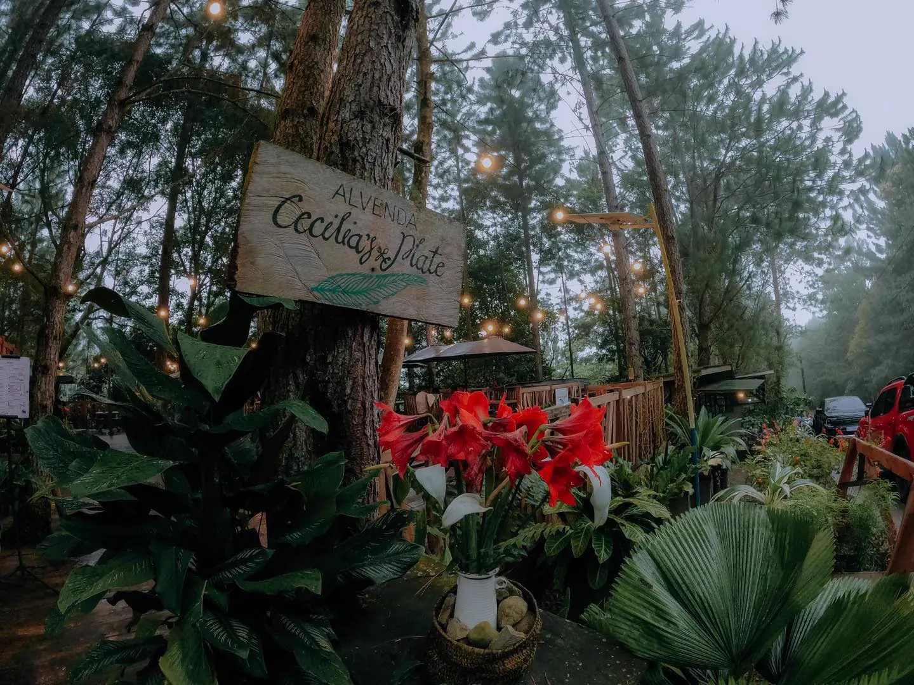
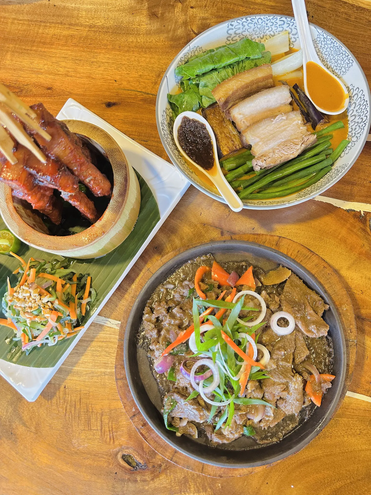
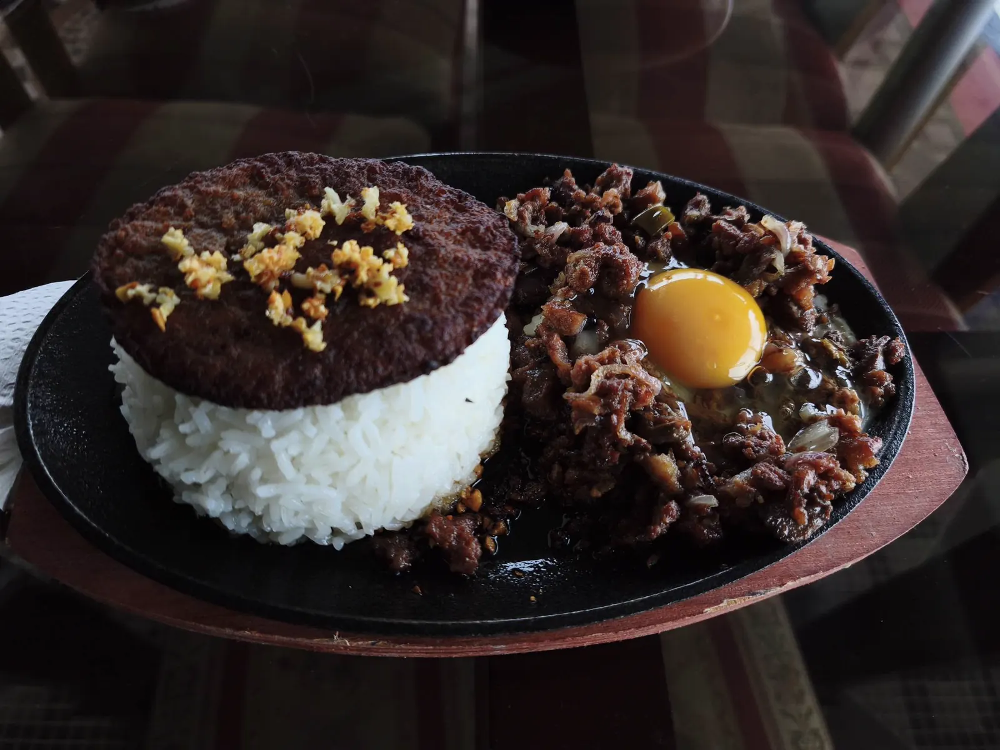

Cecillia's Plate
A go-to local food stop for warm meals and group-friendly table setup.
Reserve a TableFood Spots
Discover local dishes, strawberry treats, and scenic food stops that pair perfectly with your Sergio Osmeña itinerary.
Featured Food Stops
These cards are based on your uploaded photos and organized for easy trip planning.

A go-to local food stop for warm meals and group-friendly table setup.
Reserve a Table
Comfort food selections that work well after long sightseeing sessions.
Reserve a Table
Quick snacks and meals near scenic decks for travelers with tight schedules.
Reserve a Table
Popular refreshment stop known for sweet strawberry-based drinks.
Reserve a Table
Farm atmosphere with fresh produce, snacks, and scenic countryside ambiance.
Reserve a Table
Simple food choices in a hillside setting for in-between itinerary stops.
Reserve a TableQuick Food Guide
| Food Spot | Recommended Try | Best For |
|---|---|---|
| Cecillia's Plate | Local meal plates | Families and friend groups |
| La Presa | Strawberry shake and snacks | Day-trip refreshments |
| Viewpoint Food Strip | Quick snacks and drinks | Short stopovers during photo tours |
| ACIS Hillside | Simple comfort food picks | Relaxed itinerary pacing |
Restaurant Reservations
Pick a food stop, confirm your preferred time, and send a simple sample request without leaving the page.
Reservation Form